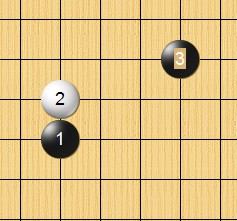
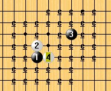
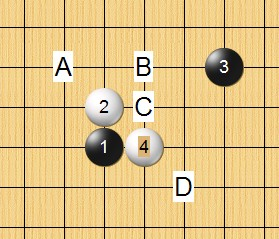
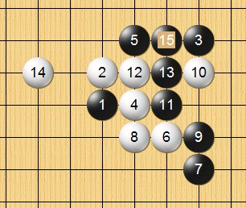
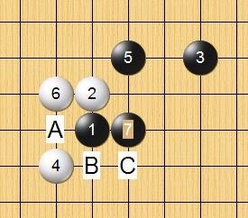
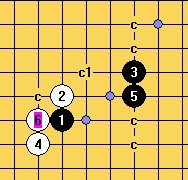
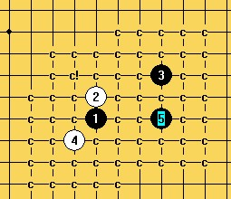
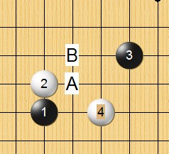
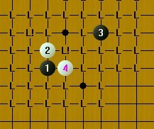

外残月列传（妖刀九传之四）
#1 <font color="Fuchsia">外残月列传（妖刀九传之四）</font> 作者：失落刀 发表时间：2008-11-15 16:22:17

期待分析该局（外残月）。
#2 Re:外残月列传 作者：潇洒 发表时间：2008-11-15 16:43:00
这个刀接近白胜了#3 Re:外残月列传 作者：失落刀 发表时间：2008-11-15 20:04:06

外残月变化通外溪月。
这两个开局命运一样吧.
#4 Re:外残月列传 作者：失落刀 发表时间：2008-11-16 11:47:29

5走A/B/C即将败，外残月通外溪月即将白必胜。大家扫下地毯防吧。
#5 Re:外残月列传 作者：26 发表时间：2008-11-16 19:45:08

好像这个15唯一了。白有可能胜吗？
#6 Re:外残月列传（妖刀九传之四） 作者：快乐天羽 发表时间：2008-11-30 20:57:35
看了这个刀，个人感觉这种刀似乎1左下的4手应该不错，我只是从理论上感觉的，但我没拆过这个刀。有兴趣的拆下，拆出来必胜了，别忘了给我一份，哈哈。=======上图对应的爱五子棋谱代码如下，以便你拆解：========
h8h9k10g7
======================================================
#7 Re:外残月列传（妖刀九传之四） 作者：失落刀 发表时间：2008-12-1 8:18:10

13楼说的4，5一打地毯胜，另一个5见图，或许需要换5？
#8 Re:外残月列传（妖刀九传之四） 作者：快乐天羽 发表时间：2008-12-1 19:56:59
我只是从感觉上看这个4手应该比较好，刀没太深入拆过，惭愧。
我还以为这个5是最强的那，没想到还有更强的可以地毯胜的5手，给个提示。
从道理上说，这个4不错的，脱离开3手，杀伤力很强，5手强的应该不多。更不知道会有一打黑必胜的5手。
#9 Re:外残月列传（妖刀九传之四） 作者：快乐天羽 发表时间：2008-12-1 20:00:14
是3下边的5吗？感觉只有那个5能在白进攻路线上有个反什么的。别的估计都够不到。#10 Re:外残月列传（妖刀九传之四） 作者：失落刀 发表时间：2008-12-1 20:53:58
3下面的5必败，胜5是3下下面的5.见下面两个图。

#11 Re:外残月列传（妖刀九传之四） 作者：木月 发表时间：2008-12-1 21:30:02
教主们，这个是白必胜撒［ 失落刀 于 2008-12-1 21:43:50 时奖励此帖[金币加 20 威望加1］木月GG来了？虽然是乱说，勇气可嘉，鼓励下。
#12 Re:外残月列传（妖刀九传之四） 作者：浪人痴痴 发表时间：2008-12-1 21:38:45
挖.木老头也来看棋了....教主们.加油啊!~［ 失落刀 于 2008-12-1 21:46:30 时奖励此帖[金币加 20 威望加1］大家一起努力哈。
#13 Re:外残月列传（妖刀九传之四） 作者：冷面孤煞 发表时间：2008-12-2 13:56:04
 你们的是什么版本的啊，怎么有A B C D 点挖
你们的是什么版本的啊，怎么有A B C D 点挖
在打谱软件可录状态下，按ctrl+鼠标左键，可以在鼠标指示处标记字母。----失落刀
#14 Re:外残月列传（妖刀九传之四） 作者：失落刀 发表时间：2008-12-11 21:04:33

这两个5不知道好不好，强人指点下。
#15 Re:外残月列传（妖刀九传之四） 作者：裁决殿雪月 发表时间：2009-5-3 10:27:53
这个刀给人的感觉很压抑#16 Re:外残月列传（妖刀九传之四） 作者：火光冲天 发表时间：2010-1-10 22:50:32
刚开始下这个局，请问这个目前有结论了吗？
=======上图对应的爱五子棋谱代码如下，以便你拆解：========
h8h9k10i8i10j7k6i7k7
======================================================
这个怎么走？
#17 Re:外残月列传（妖刀九传之四） 作者：日月丽天 发表时间：2010-1-31 9:56:38
回复10楼：
原来大明星和大金星的一个4的变化，5在这里，在外残月3子位置，算我找到答案了，谢谢失落刀，高高高手
#18 Re:外残月列传（妖刀九传之四） 作者：日月丽天 发表时间：2010-1-31 9:59:06
可以同大明星和大金星了
#19 Re:外残月列传（妖刀九传之四） 作者：棋魂死性不改 发表时间：2010-4-7 21:10:59
=======上图对应的爱五子棋谱代码如下，以便你拆解：========
h8h9k10i8j7i10i7g8j11f9h7f7e6k7i12l9
====================================================== 请问这个 局 是什么结论 平衡？ 白优？黑优？
#20 Re:外残月列传（妖刀九传之四） 作者：失落刀 发表时间：2010-6-11 21:55:46
=======上图对应的爱五子棋谱代码如下，以便你拆解：========
h8h9k10i8i9j7g10j10k6i7j8k7h7
======================================================
请教黑9防后，白可否必胜？
#21 Re:外残月列传（妖刀九传之四） 作者：淡红的秋樱 发表时间：2010-6-12 9:44:35
=======上图对应的爱五子棋谱代码如下，以便你拆解：========
h8h9k10i8i9j7g10j10
======================================================
与下图到盘端有一路差别。很容易就看错。
=======上图对应的爱五子棋谱代码如下，以便你拆解：========
h8h9i6g8g9f7i10i7
======================================================
参考此贴ShowPost.asp?ThreadID=9647
目前已有初步结论，（自然是白胜啦）等待地毯检测。
［此帖子已被 淡红的秋樱 在 2010-6-12 9:46:00 编辑过］
#22 Re:外残月列传（妖刀九传之四） 作者：失落刀 发表时间：2010-6-13 21:35:41

整两个5吧，大家闲着也是闲着。
#23 Re:外残月列传（妖刀九传之四） 作者：失落刀 发表时间：2010-6-13 21:58:08
如果再拆出来一个5败，就终结了外残月和外溪月两个妖刀。#24 Re:外残月列传（妖刀九传之四） 作者：失落刀 发表时间：2011-3-9 19:54:43
=======上图对应的爱五子棋谱代码如下，以便你拆解：========
h8h9k10i8i10j7k6
======================================================
=======上图对应的爱五子棋谱代码如下，以便你拆解：========
h8h9j11g10j9i8f11
======================================================
=======上图对应的爱五子棋谱代码如下，以便你拆解：========
h8i8j11h9j9g10f11
======================================================